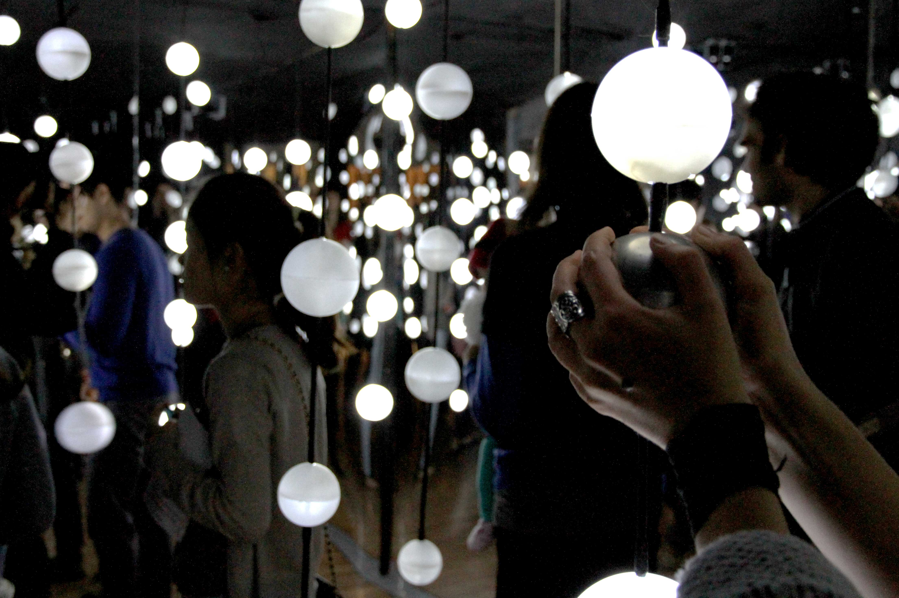

{% for image in page.images %}
The room – approximately 20x20 feet in size – was filled with over 150 spherical lights, and clad from floor-to-ceiling in mirrored acrylic panels to create an infinite night sky.
Visitors were invited to enter into the space — eight at a time – to explore. Open-ended interactions encouraged exploration, and upon discovery of "trigger" lights, the overall space responded with location-specific music and lighting changes in sync to the audio. Beyond the visual experience, Ad Astra turned small visitor interactions into large spatial responses.

"Once inside the dreamlike (or was I just dreaming?) space, there was a sense of peacefulness amongst those enjoying the aesthetically pleasing, almost otherworldly void we found ourselves a part of."Rhys Male, ARTORONTO Magazine
This installation was a collaboration between 7 architecture grads, a biomedical engineer, a musician, and a sound engineer, and completed as part of ReduxLab at Ryerson University. The installation was exhibited as part of Scotiabank’s Nuit Blanche 2013, Toronto’s largest all-night public art festival, and named amongst the 'Must-See Independent Exhibits' by Designlines Magazine.
Project Details
Links